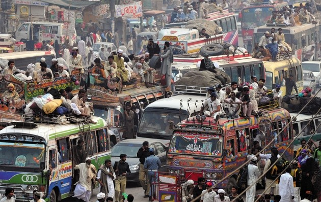
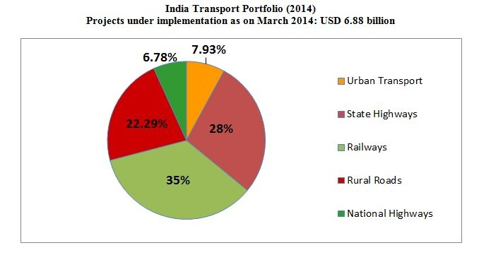
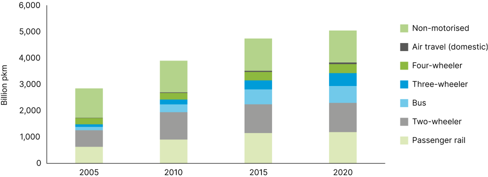
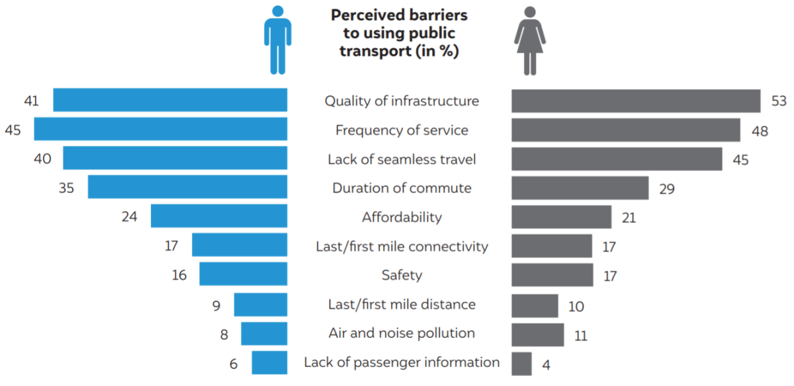

In collaboration with an India-wide NGO, Parisar
Alongside the NGO, Parisar we want to strive for a future where transport can be available for all people in India and across the worldregardless of their race, cast and economic identities, we also want to advocate for a sustainable future since major issues such as climate change and global warming threaten our future and unsustainable transport fueled by fossil fuels is a major cause for these issues around the world with transport accounting for over 12% of India's total emmisions which is why we want to make transport better on an overall basis. This problem has a major effect on my target audience, who are the middle class people of a working age from 18-60 who might not be given access to efficient sustainable transportation in India preventing them gaining a sense of belonging in the community through the non-inclusivity of sustainable public transport in india. This issue prevents the average middle class person from accessing efficient transportation across the city, which in turn prevents them from accessing parts of the city important for them through their jobs, accessibility to their home and other miscellaneous transportation requirements. This problem has existed ever since the independence of the Indian nation where middle class Indians haven’t had access to sustainable public transportation that can help them move across the city and their localities.
Roads carry almost 85 percent of the country's passenger traffic and more than 60 percent of its freight. Rail carried some 19.8 million passengers and 2.4 million tonnes of freight a day in year 2009 and is one of the world's largest employers. However, this is all not beneficial for our nation as most of these on road vehicles operate using fossil fuels which are known to cause detrimental damage to the environment and are also linked to the uprise of climate change and global warming. India aims to reach a net carbon emmisions of zero by 2070, but is this possible?, only the change happening in the near future can decide that.
  